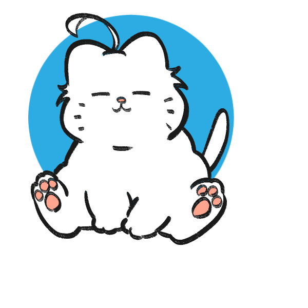

함께 갈 수 있게 나누기
- 상황
- 졸업과제 팀에 전공을 업으로 삼지 않겠다는 팀원이 많아서, 이대로면 활동이 원활하지 않을 것 같았어요.
- 행동
- 팀원마다 관심 있는 분야나 접근하기 쉬운 일을 맡도록 역할을 나눠서, 모두가 팀에 소속감을 느끼게 했어요.
- 결과
- 개발 기간이 예상보다 7일 앞당겨졌어요.
근거 졸업과제 개발 기간 예상보다 7일 단축
안녕하세요,
컴퓨터정보보안학과
취미 산책, 공연 보기, 미드·영화, 악기 배우기
나는 어질러진 것을 정돈할 때, 비로소 생각이 보인다.
복잡하게 얽힌 상황에서 핵심을 찾고, 흩어진 것들을 하나의 구조로 모으는 순간을 좋아해요. 보안보다는 서비스를 개발한 경험이 더 많습니다.
생각이 막히면 걷거나 주변을 치우며 머리를 식히고, 다시 돌아와 문제를 봅니다.
이 페이지는 저와 함께 일할 팀과 채용 담당자에게, 제가 어떻게 생각하고 일하는지 편하게 보여 드리려고 만들었어요.

근거 졸업과제 개발 기간 예상보다 7일 단축
근거 곤란해할 때마다 도와줘서 감사하다. 주변사람을 잘 챙겨주시는 것 같다는 얘기를 많이 들었습니다.
근거 AI 기초와 CNN을 2주 만에 이해하고 구현해 서비스 완성
IT에 대한 이야기라면 언제든 좋아요. 최근 관심사는 네트워크, 보안입니다.
yuhyeon767@gmail.com